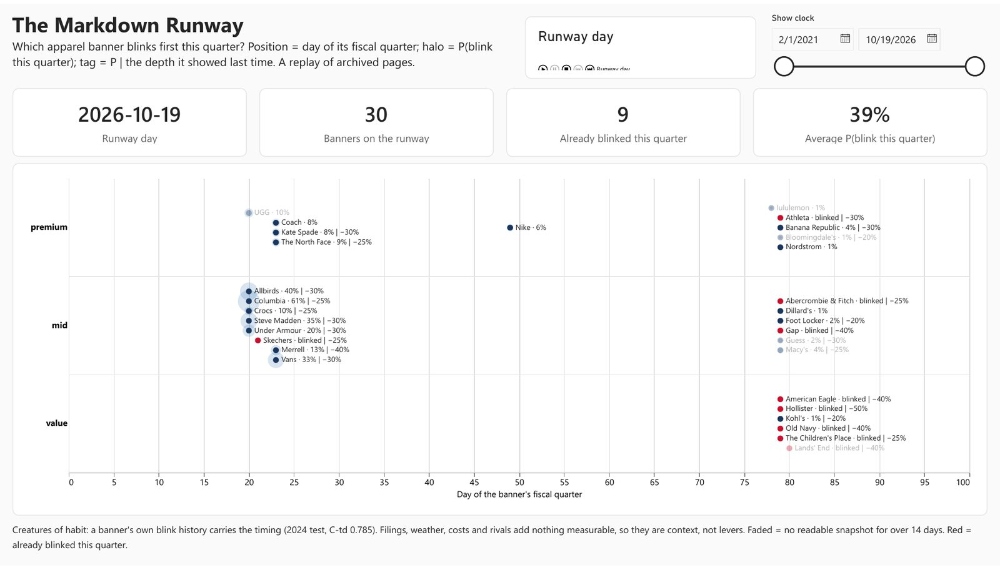
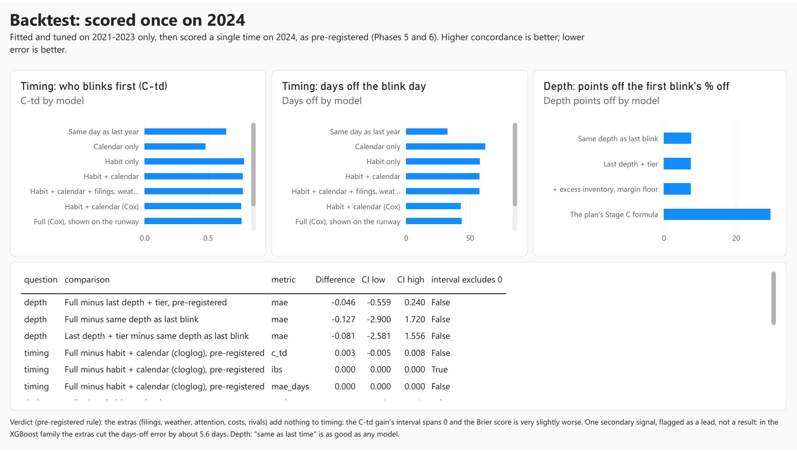
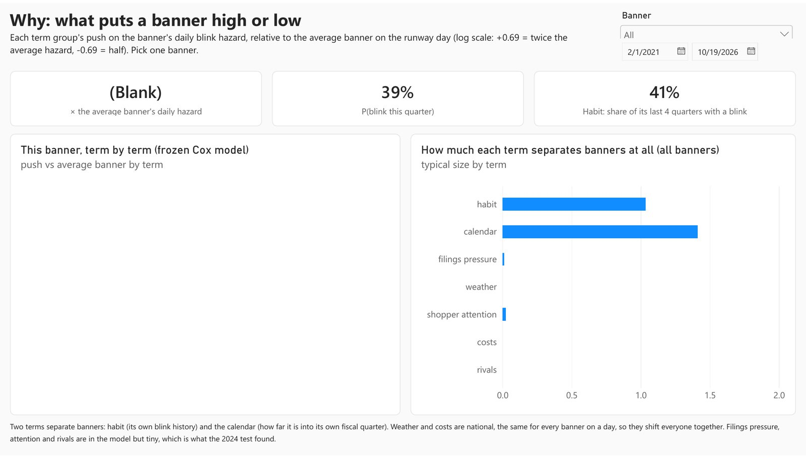
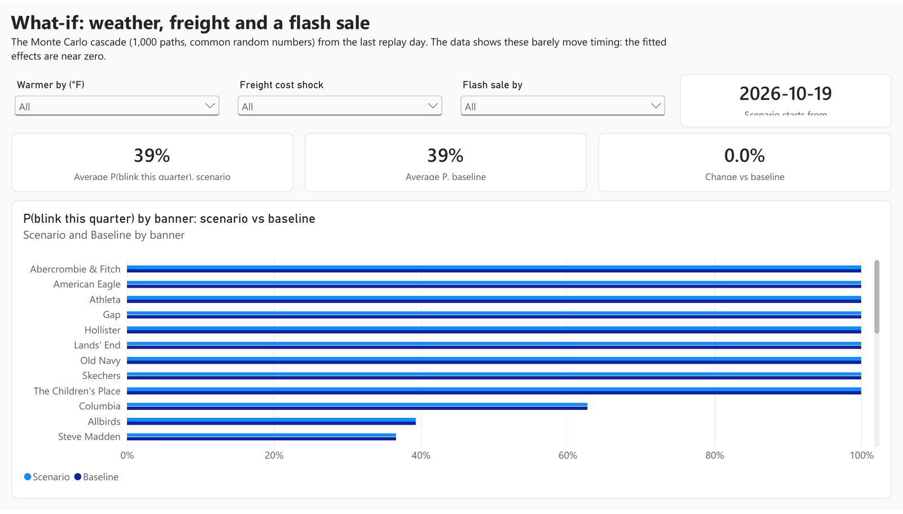
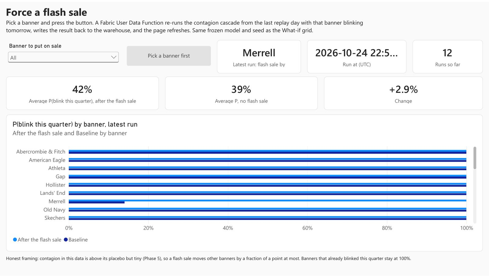
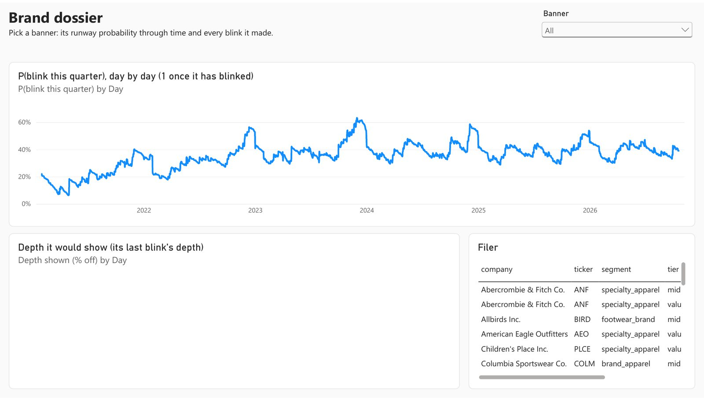
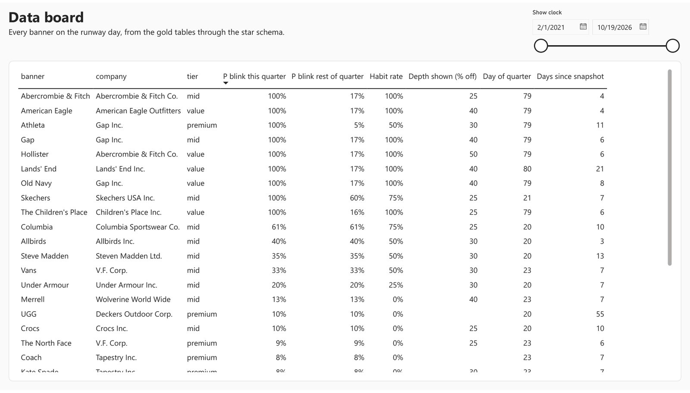
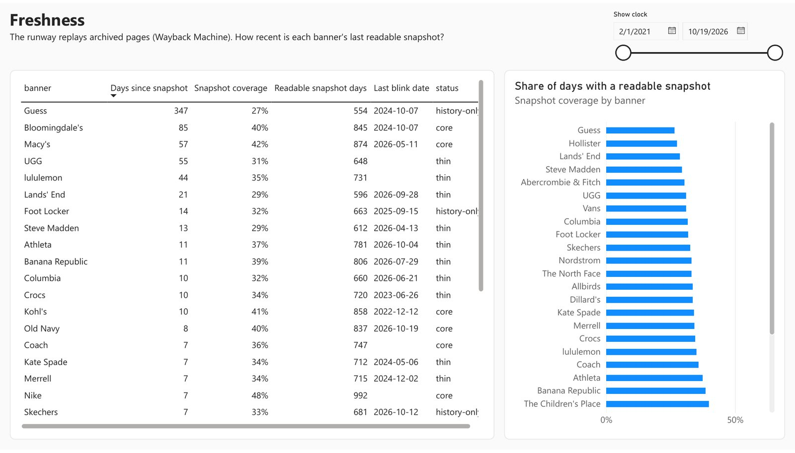
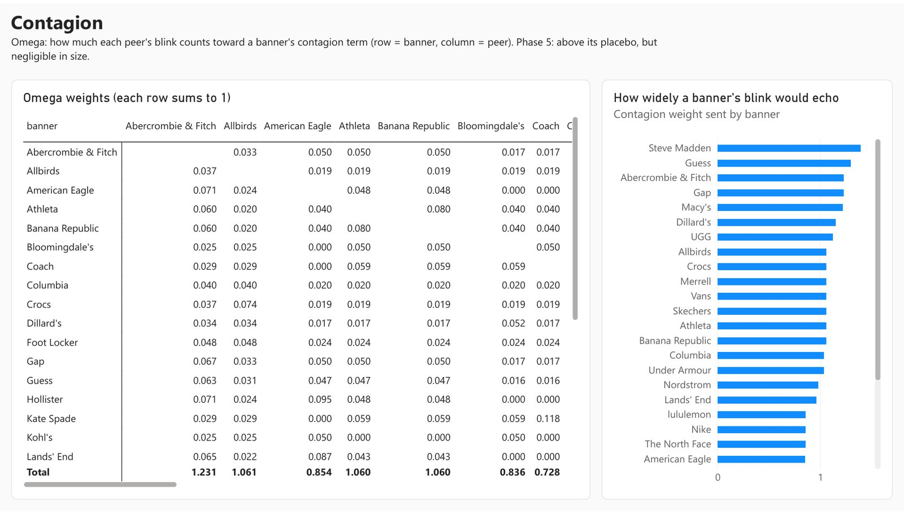

Work / The Markdown Runway
Self-builtOct 2026
The Markdown Runway: When Will a Brand Run Its Next Big Sale?
Most fashion brands are on some discount all the time, so I asked: when will a brand go deeper than its usual, with a big discount on its whole website? I read 23,353 saved copies of 30 brands’ homepages from 2021 to 2026 to find out. The answer is the brand’s own habit: brands that did it recently keep doing it, at about the same discount. Company filings, weather, online interest, shipping costs and rivals didn’t help; the saved homepages alone were enough.
Test written down first, scored once on 2024

Why I Built This
In 2022 many fashion brands were stuck with too much stock. Their own SEC filings show it: Gap’s inventory grew 47 points faster than its sales in mid-2022, and Nike’s 41 points. The common belief is that piled-up stock forces brands into deep sales, and that weather, shipping costs and rivals’ sales push them too. I wanted to test that belief with real data instead of assuming it.
The goal had four parts:
- When. Predict when a brand will run its next big whole-site sale, and which brand will go first.
- How deep. Predict how big that discount will be.
- Why. Find out what actually drives it: the brand’s own habit, or outside pressure like unsold stock, weather, shipping costs and rivals.
- Build it like a real team would. Use free public data only, and build the whole system end to end on Azure and Microsoft Fabric: data pipeline, prediction models, a fair test, a Power BI report and a 3D app.
The 3D Show in Three 30-Second Clips
I built a 3D app inside Microsoft Fabric that replays every big sale by the 30 brands since February 2021, then walks through what the test found. Each clip shows one of its three views.
1. The Pulse
Each line is a brand. Each spike is a big whole-site sale; the taller the spike, the bigger the discount. The glow ahead shows the model’s chance of a sale before the quarter ends.
2. The Habit Stacks
Each stack is a brand, and each block is a quarter in which it ran a big whole-site sale. Watch the same brands pile up from 2021.
3. The Habit Skyline
Every brand and every quarter as a city of discounts, with the 2024 test results as pillars and each brand’s chance this quarter as a glowing ball.
Recorded from the 3D app running on my laptop with the Fabric data exported on October 25, 2026. The numbers match the live app exactly.
The Question
Most fashion brands are on some kind of discount almost all the time, so “when will they discount?” isn’t a useful question. The useful one is: when will a brand go deeper than its usual, how deep, and which brand will do it first? A pricing team watching rivals, a deal website or a shopper timing a purchase would want to know.
A big sale here has to meet two rules. The discount covers the whole website (“40% off everything”), and it is at least 10 points deeper than that brand’s usual over the past year. If a brand normally shows 20% off sitewide, only 30% or more counts. Sale sections (“up to 65% off sale”), clearance, “select styles” and sign-up codes don’t count.
What I Did
- Collected 5½ years of homepages. The Internet Archive keeps dated copies of websites. I pulled 23,353 copies of 30 US fashion brands’ homepages (23 public companies), from February 2021 to October 2026.
- Read the sale banners automatically. Rules read each page, like “40% off everything”, and record the discount, skipping store-card and sign-up offers.
- Added the outside data. Unsold inventory from company filings (SEC), weather (NOAA), online interest (Wikipedia page views), shipping and cotton prices (FRED), and each brand’s rivals. Every number was used only from the day it became public.
- Wrote the test down first. On October 23, 2026, before looking at any 2024 results, I wrote down exactly how each idea would be judged.
- Trained on 2021–2023, tested once on 2024. Three kinds of prediction model learned from three years of data, were frozen, and got a single shot at 2024.
How It’s Built
Read it top to bottom: free public data goes in at the top, and the Power BI report and the 3D app come out at the bottom. The collecting runs on Azure; everything after that runs in one Microsoft Fabric workspace.
Sources
Everything is free and public.
1. Collect
Downloads the data and keeps it safe.
2. Store and clean
Three layers, each cleaner than the last.
3. Learn
Train, freeze, test once.
4. Show
Where people see the results.
What I Found
From the 2024 test: 119 brand-quarters and 47 big sales.
The story in one line: brands run big whole-site sales out of habit. The ones that did it recently keep doing it, at about the same discount. The outside data, including the company filings (inventory, sales, cash), didn’t help. The saved homepages alone were enough.
What this doesn’t cover: only whole-site sales. Nike, Nordstrom, lululemon, Coach, UGG and Dillard’s never ran one since 2021. They discount through sale sections, clearance and “select styles” instead (Nike’s sale section went up to 65% off, Nordstrom’s designer clearance up to 70%), and this project doesn’t measure those. A homepage also shows the advertised discount, not what shoppers paid, and the test could only spot a strong effect.
Every Idea I Tested
| Idea | What happened on 2024 | Verdict |
|---|---|---|
| A brand’s own track record (habit) | Picked the right brand to go first 79% of the time, the best of everything I tried | Worked |
| Same discount as last time | 7 in 10 next sales were within 5 points of the last one | Worked |
| How far into its quarter a brand is | 48% on its own, worse than a coin flip, and no help on top of habit | Weak |
| An inventory “pressure” score, tried first on 2022 | Mostly re-found the brands that are always on sale | Weak |
| Company filings: unsold inventory, sales, cash | No improvement: 78% with all the extra data, vs 79% without | No help |
| Weather | No improvement. Even a much warmer season moves a brand by under 4 points | No help |
| Online interest (Wikipedia page views) | No improvement | No help |
| Shipping and cotton costs | No improvement. A 50% freight jump moves a brand by about 2 points | No help |
| Rivals copying each other | Real, but tiny: a rival’s sale moves another brand by under half a point | Real but tiny |
| Inventory and profit margin setting the discount | No better than “same discount as last time” | No help |
| The original plan’s discount formula | 30 points off on average, vs 7.6 for “same as last time” | No help |
| A machine-learning model (XGBoost) | 77% right, no better than habit alone | No better |
| Guessing the exact day | About one to two months off; a 5-week window is the honest answer | Weak |
How I Made Sure It’s Real
- The rules came first. I wrote down how to judge each idea before seeing 2024, and scored it once.
- Someone else re-checked it. A separate check recomputed every 2024 number and re-read 300 random pages. No differences.
- The inputs match their sources. All 18 numbers spot-checked against SEC and FRED matched.
- It held up on new data. On 2025, a year the models never saw, habit still ranked the brands well.
- It doesn’t depend on my definition. Calling a big sale 5, 15 or 20 points deeper than usual, instead of 10, gave the same answer.
- Known weak spots. It counts whole-site sales only. The page reader gets about 1 page in 5 wrong (for example “doorbuster” deals). The test could only catch a strong effect.
I also found and fixed a mistake in my own test. While re-checking, I saw that the timing score only counted the days when a page was saved. Scored properly, the main model’s timing error drops from 57 to 31 days. The main finding doesn’t change, and the correction is written up in the project’s model card.
The Power BI Report, Page by Page
Nine pages, all reading the same Fabric data. A date slider replays any day from February 2021 to October 2026. Here is what each main page shows and what it says. On every page, Nike, Nordstrom, lululemon, Coach, UGG and Dillard’s sit near 0%: that means no whole-site sale expected, not no sales.
1. Runway: where every brand stands today
- What it shows
- Each dot is a brand on October 19, 2026, the last saved day.
- How to read it
- Left to right is how far the brand is into its own 3-month quarter. Rows are price level (premium, mid, value). The label gives the chance of a big whole-site sale before the quarter ends, then the last discount: “Columbia · 61% | −25%” means a 61% chance, and 25% off last time. Red means it already had its sale this quarter.
- What it says
- 9 of the 30 brands already had their sale this quarter. Columbia (61%) and Allbirds (40%) are the likeliest to go next.

2. Backtest: the scorecard
- What it shows
- How every model did on 2024, the year it was tested on once.
- How to read it
- Left: how often each model picked the right brand to go first (longer is better). Middle: how many days off its date guess was (shorter is better). Right: how many points off its discount guess was. In the table, “False” means the extra data made no real difference.
- What it says
- Habit alone is as good as any model. No model gets the exact day right. “Same discount as last time” is the best discount guess.

3. Why: what moves a brand’s chance
- What it shows
- Which factors push a brand’s chance up or down.
- How to read it
- The bars on the right show how much each factor separates one brand from another. Pick a brand to see its own breakdown on the left.
- What it says
- Only two factors matter: the brand’s habit and how far it is into its quarter. Inventory, weather, interest, costs and rivals are close to zero.

4. What-if: change the weather or costs
- What it shows
- Each brand’s chance under a scenario you pick: a warmer season, a jump in freight costs, or a rival’s flash sale.
- How to read it
- Light bars are the scenario; dark bars are the normal forecast. The cards at the top show the average change.
- What it says
- The bars barely move. Even a season 6°F warmer moves a brand’s chance by less than 4 points.

5. Force a flash sale
- What it shows
- Pick a brand and press the button. The model re-runs as if that brand starts a big sale tomorrow, and the page updates.
- How to read it
- Each bar is a brand’s chance after the forced sale (light) next to normal (dark). In this run, Merrell was forced on sale, so the +2.9% average at the top is almost all Merrell itself.
- What it says
- Merrell jumps to 100%, but every other brand moves by a fifth of a point or less. Brands barely copy each other.

6. Brand dossier: one brand over time
- What it shows
- A brand’s chance of a big sale, day by day since 2021, with its company details.
- How to read it
- With no brand picked, the line is the average of all 30 brands. It climbs through each quarter as brands run their sales, then drops back when a new quarter starts.
- What it says
- It shows the quarter-by-quarter rhythm the models learned. Pick a brand to see its own line.
Three supporting pages



What It Means
For a pricing team watching competitors, a deal website, or a shopper deciding when to buy. It covers whole-site sales only.
- Brands that had whole-site sales recently will have more. Old Navy and Gap each had one in 20 of their last 22 quarters, so expect another. You can check this for free from a brand’s old homepages.
- The discount usually repeats. If a brand’s last whole-site sale was 40% off, expect about 40% next time. That guess was within 5 points 7 times out of 10, about as good as any model I built.
- Extra data isn’t worth paying for here. Adding company filings (unsold stock, sales, cash), weather, online interest and shipping costs didn’t improve the guess: 79% right without them, 78% with them.
- You can predict roughly when, not the exact day. “A big sale in the next 5 weeks” is realistic; “the sale starts November 14” isn’t. Exact-day guesses were a month or more off.
- What this doesn’t cover. Nike, Nordstrom, lululemon and Coach discount through sale sections, clearance and “select styles”, not the whole site. This project doesn’t measure those sales.